Обитель теней
Спустись в подземелья аббатства. Найди ключи, очисти три печати и открой путь на следующий этаж.
«Обитель теней» создана для горизонтального экрана. Поверните телефон и нажмите кнопку полного экрана.
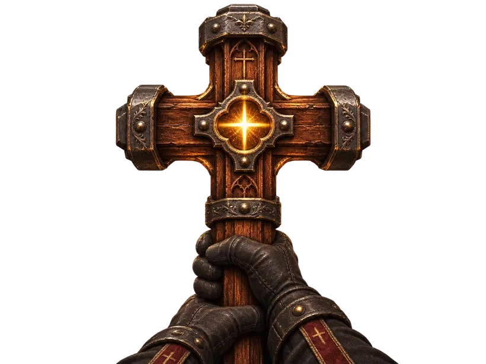
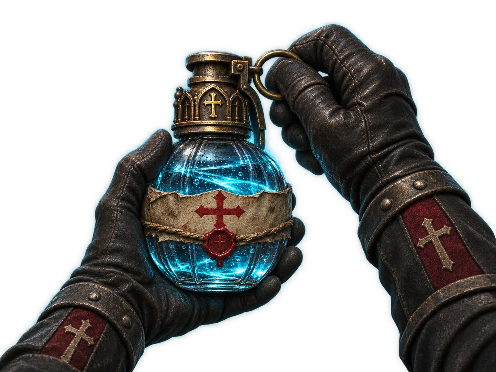
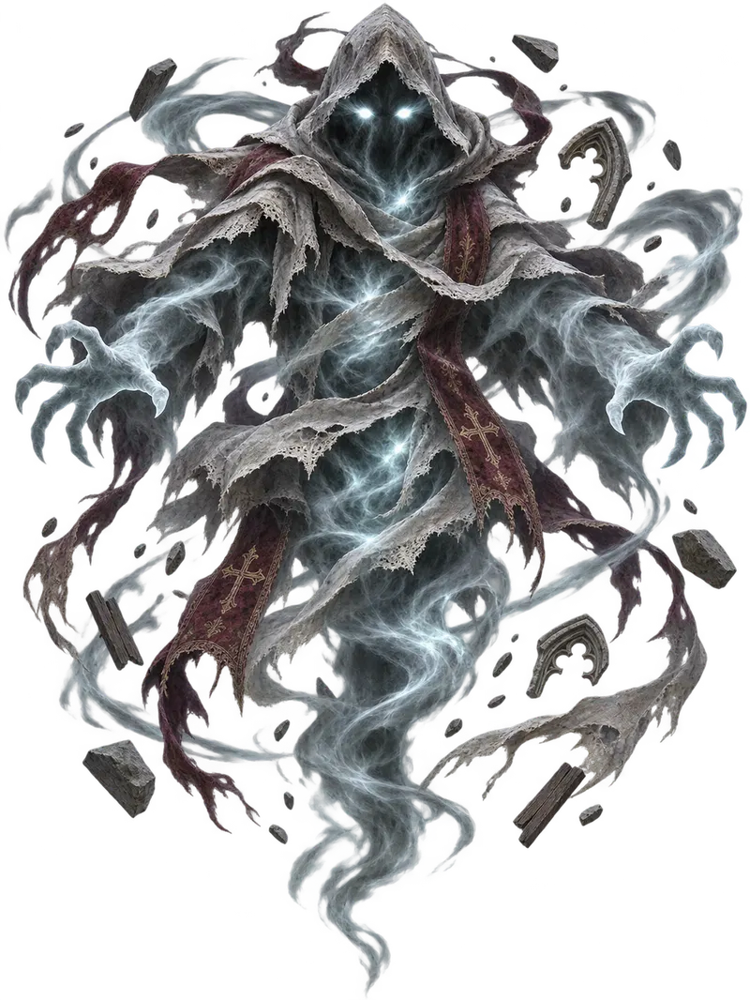
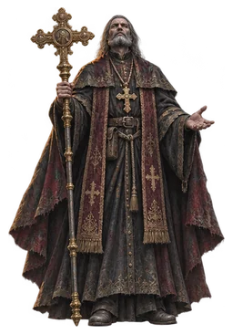
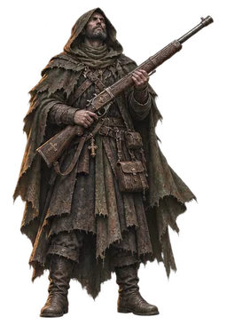
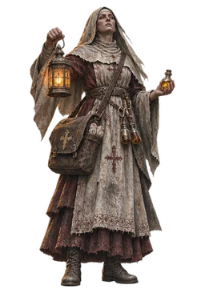
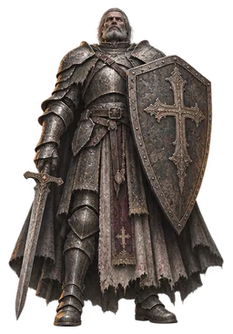
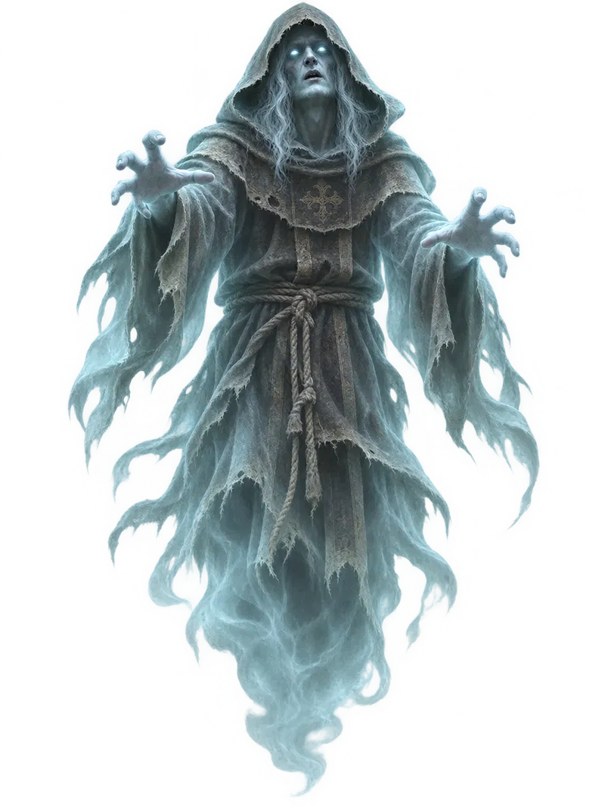
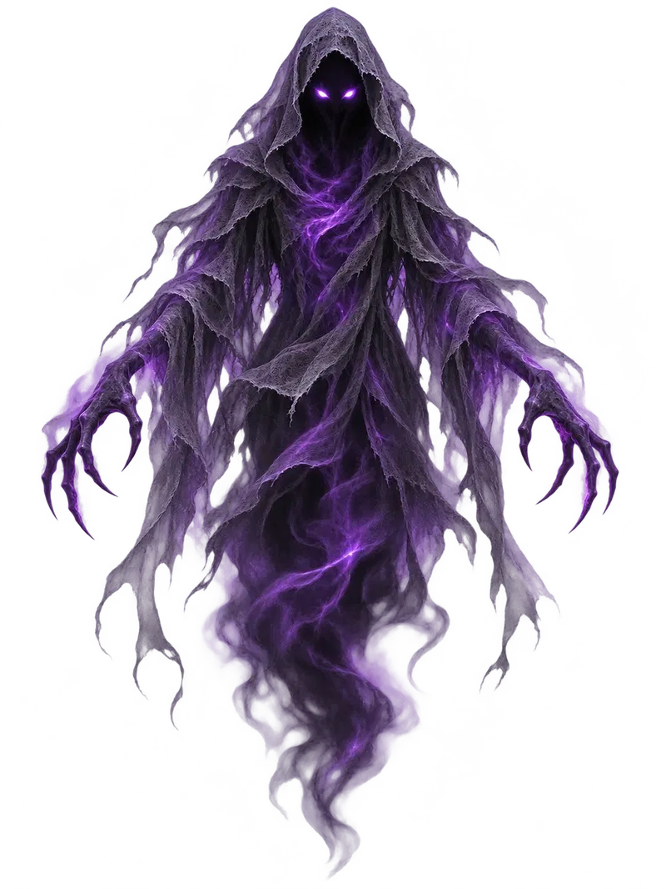
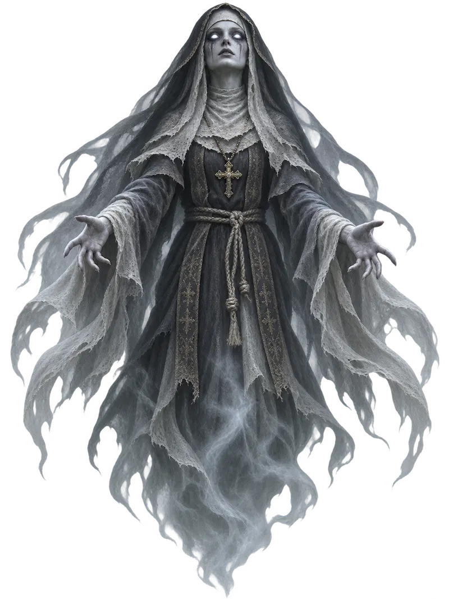
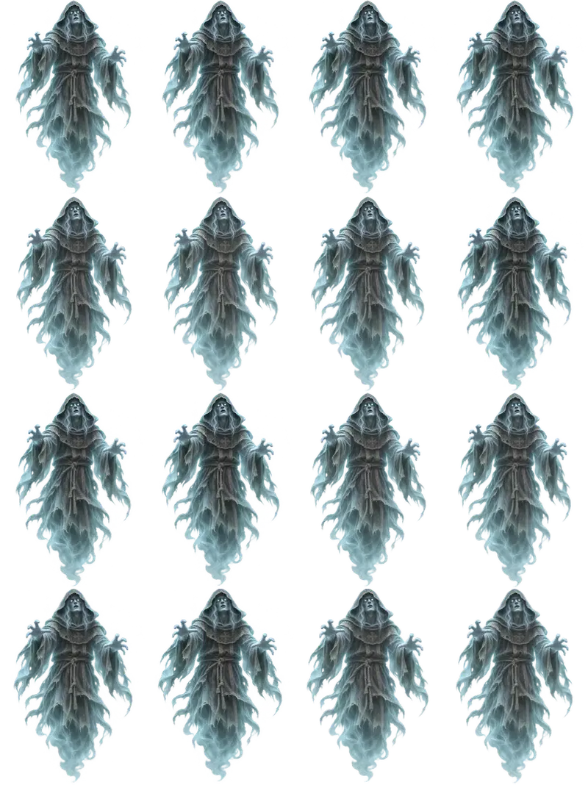
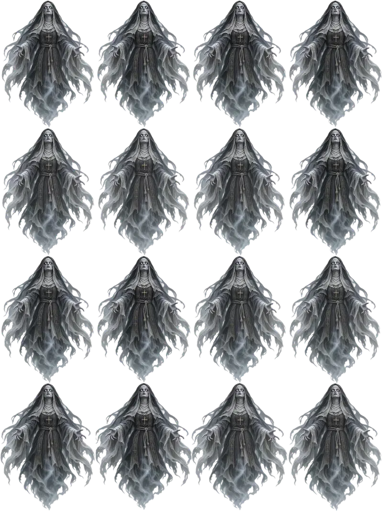
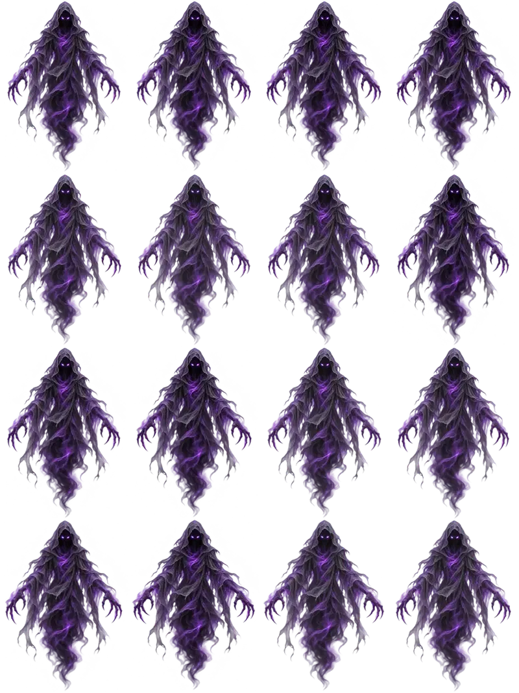
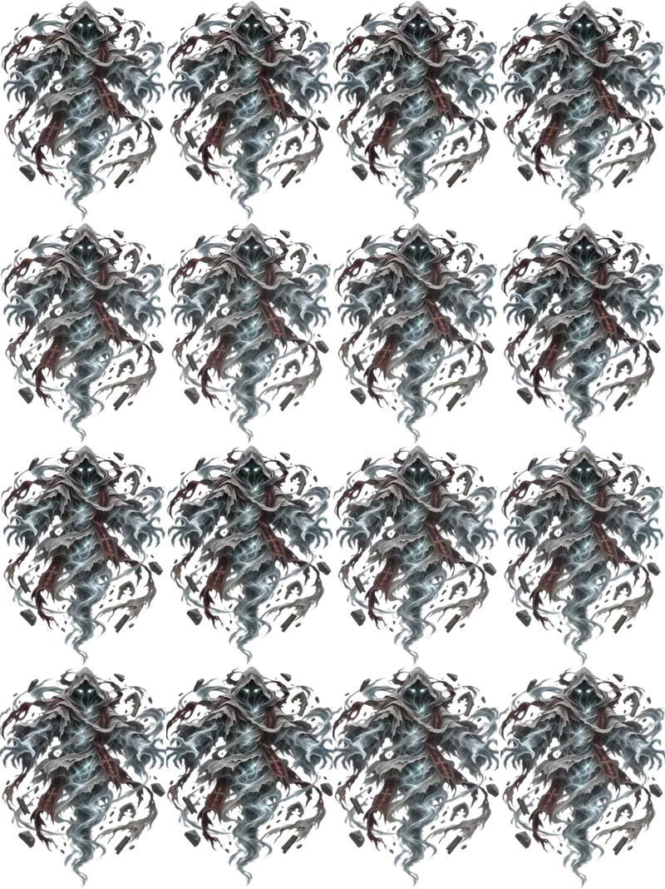
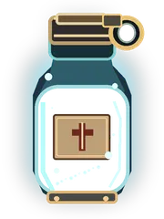
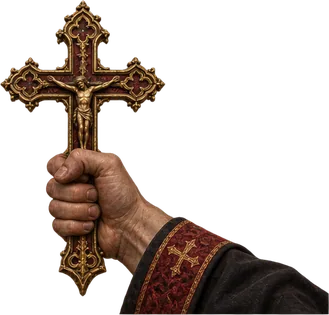
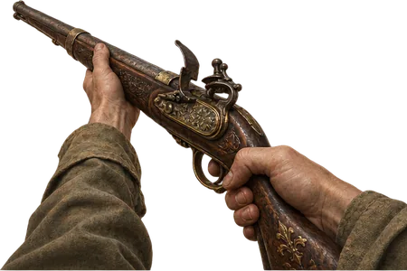
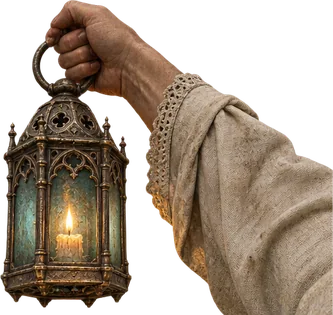
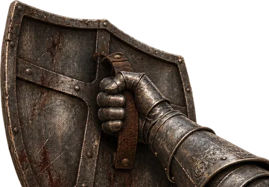
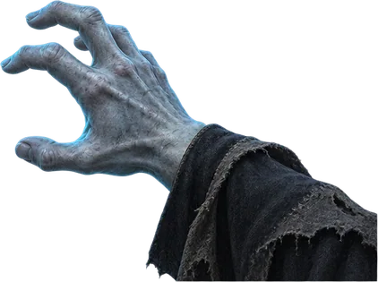
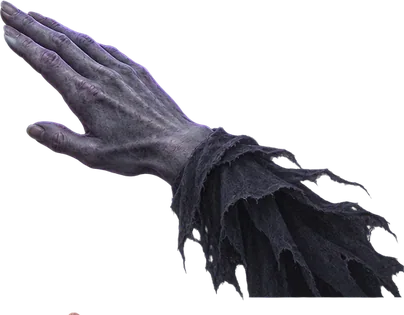
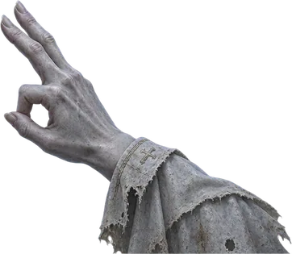
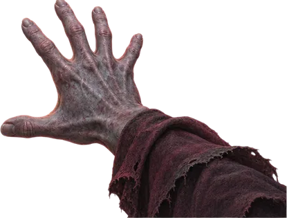